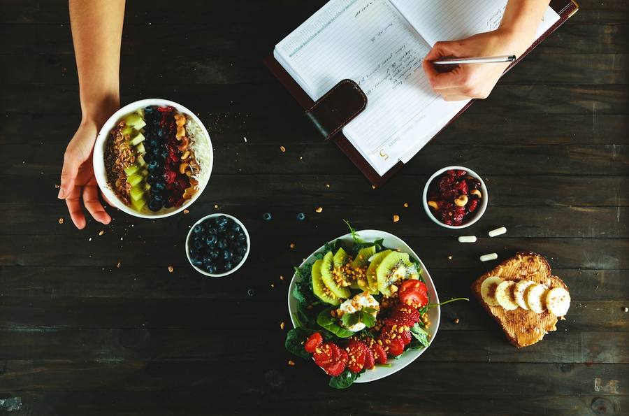

Nasıl çalışıyoruz
- Ön görüşmeAlışkanlıklarınızı, tahlillerinizi ve hedefinizi konuşuruz.
- Size özel planSevdiğiniz yemekler ve günlük düzeninizle haftalık plan hazırlanır.
- Düzenli takipİki haftada bir ölçüm yapılır, plan gidişe göre güncellenir.

Hizmetler
Görüşme ücretleri ve uygun saatler için WhatsApp'tan yazabilirsiniz.
Online diyet
Görüntülü görüşme ve mesajla takip. Şehir dışından da olur.
Yüz yüze diyet
Muayenehanede ölçüm ve görüşme.
Sporcu beslenmesi
Antrenman ve maç günlerine göre plan.
Hamilelik ve emzirme dönemi
Anne ve bebek için dengeli beslenme.
Sık sorulanlar
Online görüşme nasıl oluyor?
Randevu saatinde görüntülü arama yapılır. Planınız aynı gün telefonunuza gönderilir, takip mesajla sürer.
İlk görüşmeye ne getirmeliyim?
Son üç ay içindeki kan tahlilleriniz varsa onları getirin. Yoksa ihtiyaç olup olmadığı görüşmede konuşulur.
Plan ne sıklıkla güncelleniyor?
İki haftada bir yapılan ölçümden sonra. Arada sorun olursa mesajla yazabilirsiniz.
Saatler ve konum
Haritada ", " araması görünüyor. Gerçek sitede açık adresiniz burada yazar.